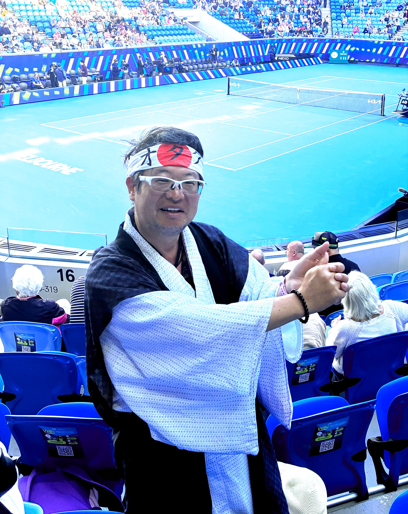

2026年 全豪オープン観戦 ／ 宮古上布にて
自己PR
日本HPに在籍していた頃、南禅寺の「群虎図」や北野天満宮の「雲竜図屏風」を高精細スキャンして和紙に複製するプロジェクトに携わりました。その取り組みは今、「綴（つづり）プロジェクト」として受け継がれ、東京国立博物館でも展示されています。歴史と文化への愛は、仕事でも本物でした。（プロジェクトの詳細はこちら）
その同じ情熱で、荻野目洋子さんが高校生の頃に「あなたの絵はグッズになる」と伝え、ポロシャツを作りプレゼントしました。数十年後、彼女は自作の絵をグッズとして販売し続けています。
好きなことに年齢も体裁も関係なく飛び込んできた人生が、今、声優という新しい扉を開けようとしています。知り合いの参議院議員・白坂亜紀さんを通じて両親の故郷・大分県竹田市の縁が繋がり、普現寺の原和尚のご縁で講談師・一龍齋貞弥さん（青二プロ所属）の真打昇進お披露目会にお招きいただきました。「物おじしない」積極性が生んだご縁が、声の仕事への道を照らしています。母からは「自分たちの子供と思えない」と言われ続けてきましたが（笑）。
「無邪気でエネルギッシュ」な声で、作品の世界に人を引き込みます。
3つの強み
-
01
課題解決力
ニーズを把握して直接動く。ITを手段として使い、世の中を便利にするために35年間走り続けてきた。
-
02
継続する競技力
卓球からテニスへ。楽しみながら勝ちを目指す真剣さを40年以上続けている。2024年マスターズ優勝。
-
03
直接アプローチする積極性
アーティスト・政治家・防衛庁関係者まで。つぶやくだけでなくご本人に直接届ける。その積極性が一龍齋貞弥さん（青二プロ）との出会いも生んだ。
目標
- 01 声優として作品の世界に人を引き込む
- 02 コメンテーターとして社会に意見を発信する
- 03 政治家として住みやすい日本をつくる
現在の状況 2026年7月
- 4月 ― タレント養成事務所に合格
- 7月 ― テアトルアカデミー横浜校 声優トレーニング開始
- 7月 ― 歴史アニメ「新ニッポンヒストリー」オーディション合格・出演決定・収録予定
- 8月 ― YouVoice Academy（YouTubeナレーター養成）開始予定
- 8月 ― UPROAD（AI×YouTube自動化）開始予定
- 2027年1月 ― 「新ニッポンヒストリー」公開予定
- 年末 ― 政治塾参加予定
スポーツ
テニスは大学サークルから現在まで継続中。2024年NSオープン50才以上マスターズ優勝。週4回コーチレッスン＋各種大会出場。卓球は大学体育会で神奈川県ダブルスベスト16。ピックルボール・スキューバダイビング・スキー・スノーボードも経験あり。複数競技でプロとラリーできるレベル。
スポーツ詳細はこちら →歴史・文化
縄文から近代史まで幅広く好き。装飾古墳・寺社仏閣・戦国・江戸・明治が特に得意。東京国立博物館には毎月足を運び、ギャラリートークも積極的に参加。着物は約40着を所有し日常的に着用。府中のくらやみ祭りをはじめ御神輿担ぎも経験あり。
歴史・文化詳細はこちら →推し活・芸能
荻野目洋子さん・西田ひかるさんのデビュー初期からの応援歴。西田ひかるさんではマナセプロダクション公認のファン選抜スタッフ組織を全国100名規模で統括。石川佳純応援Facebookグループ（14,201名）管理人。
推し活・芸能詳細はこちら →エンタメ・その他
アニメ・漫画全般。コスパ重視のグルメ開拓（上野・川崎など駅ごとに名店情報を管理）。株・投資信託の実践。長年の政治ウォッチ。Facebookグループ450以上参加・約55グループ管理人。
その他詳細はこちら →職歴
外資系IT企業にて医療・防衛・公共系の営業およびSEとして約25年勤務。国内ITベンチャーにて約5年勤務。
職歴詳細はこちら →ひとこと
体育会系・理系・文系・オタク系、全部好き。
日本って本当に寛大で、長い歴史と多くの文化とおいしい食べ物がある、幸せな国だと思っています。その幸せを次の世代にも渡したい。